After completing this lesson, you’ll be able to:
FME Flow displays published parameters in a sleek, easy-to-use form that you populate before running the workspace. FME Flow shows each parameter with the appropriate control based on its type. Here are examples of how a few common parameter types appear on FME Flow:
Jennifer is creating a user-controlled self-serve workflow. Jennifer's workspace reads in community features from the CommunityMap file geodatabase and then writes them out using a Generic writer, which allows writing to any FME-supported format. She wants the user to be able to select which feature layers to download and the output format of the data.
Follow along and complete the same steps as Jennifer to configure the parameters for the self-serve workspace.
Jennifer opens the workspace (C:\FMEData\Workspaces\DeployWorkflowsWithFMEFlow\create-a-user-controlled-workspace.fmw) in FME Workbench. The workspace reads in community features from the CommunityMap file geodatabase and then writes them out using a Generic writer, which allows writing to any FME-supported format.
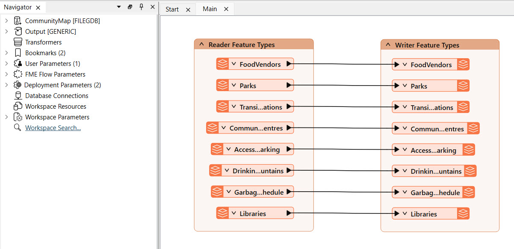
Jennifer has already created a user parameter to input the data output format, and it is linked to the writer's parameters. However, Jennifer would also like the end-user to select which feature types to include in the output.
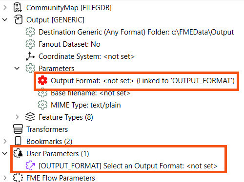
In addition to the OUTPUT_FORMAT parameter, Jennifer needs to create a parameter for the user to select which Feature Types to include in the output.
In the Navigator pane, Jen expands the CommunityMap [FILEGDB] reader and further expands Parameters and Features to Read sections. Jennifer right-clicks the Feature Types to Read parameter and selects Create User Parameter.
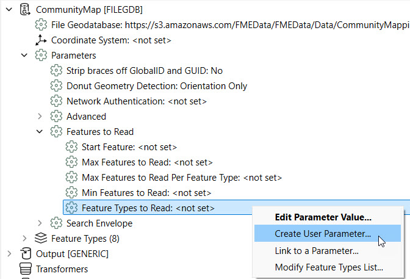
A window shows a list of Feature Types and the user parameter name, prompt, and default value.

Jennifer doesn't need to alter anything from the default here, so she clicks OK to finalize creating the parameter. This parameter adds user control over which datasets the user wants to include in the output. She can now see both user parameters in Navigator.
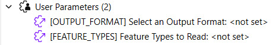
You could also create this user parameter in the Manage User Parameters window. However, this method automatically generates the list of available feature types to select from and link the FEATURE_TYPES parameter to the Feature Types to Read writer parameter, so this method is quicker for this scenario.
Now, Jennifer would like to set a default output format. In the Navigator, Jennifer right-clicks User Parameters and selects Manage User Parameters.
For the Output Format parameter, Jennifer sets the Default Value to Esri Shapefile. Under Choice Configuration, the format options have already been limited to Esri Shapefile, MapInfo TAB, and OGC GML.
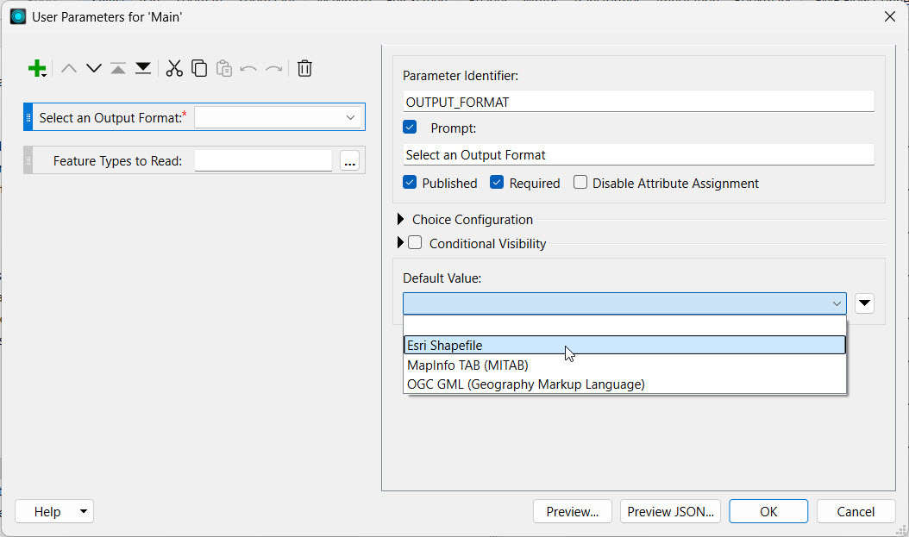
The Feature Types to Read parameter acts on the Reader, and the Output Format parameter links to the Writer in the workspace. The parameters displayed in the order here will also be the order in which they appear on FME Flow. Jennifer reorders the parameters to list the Feature Types to Read parameter first. Jennifer selects the Feature Types to Read parameter and clicks the Move Up button.
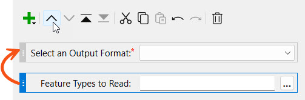
Click OK to close the User Parameters window.
Jennifer runs the workspace, ensuring Prompt for Parameters is enabled to test that her user parameters are functioning as expected.
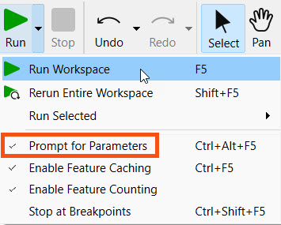
This opens the prompt where Jennifer selects the output format from the drop-down and the community map feature types to include.
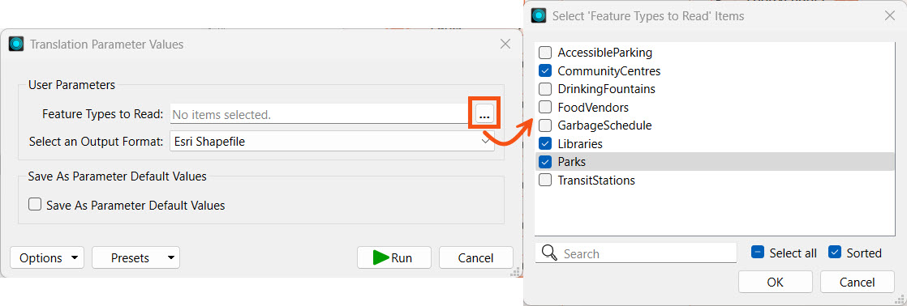
After making her selections, Jennifer clicks Run. The workspace will read only the selected feature type(s) from the File Geodatabase and include them in the Esri Shapefile output.
Jennifer has confirmed that her workspace functions as expected on FME Form. Next, she must publish the workspace to FME Flow so her colleagues can access it, too.
Jennifer publishes the workspace to the Training repository and registers the workspace with the Data Download and Job Submitter services.
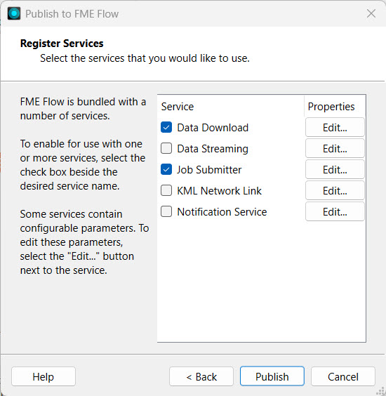


Jennifer navigates to FME Flow and opens the Run Workspace page. She selects the workspace she just published and the Data Download service.
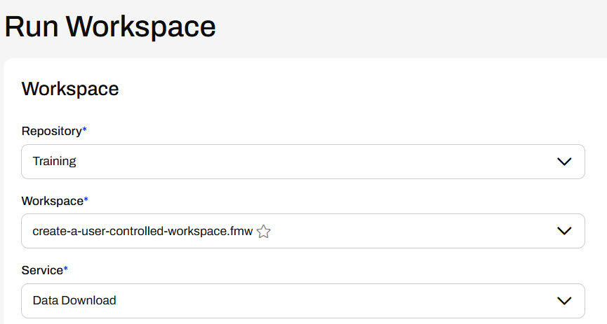
Under Published Parameters, Jennifer sees the user parameters she configured in FME Workbench. Jennifer selects a few Feature Types and an Output Format from the drop-down options.

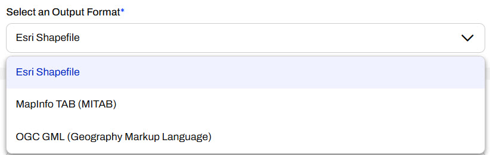
Once Jennifer selects the parameters, she clicks Run to run the workspace on FME Flow.
After the workspace runs, FME Flow presents Jennifer with the finished job status and the Data Download URL. Jennifer clicks the URL to download the data.
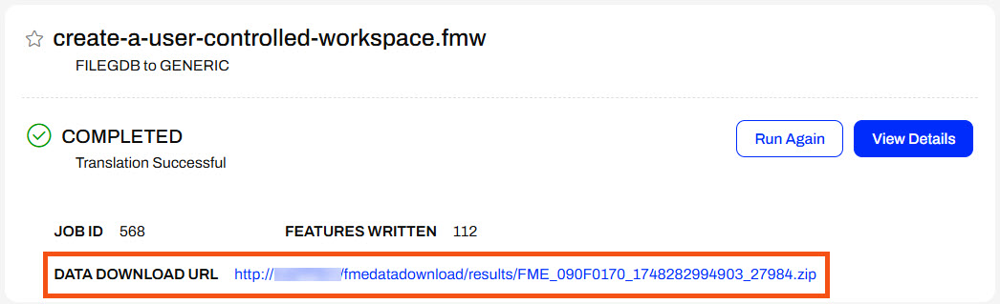
Jennifer extracts the zip file and opens the Output folder to see the data for the feature types she selected.
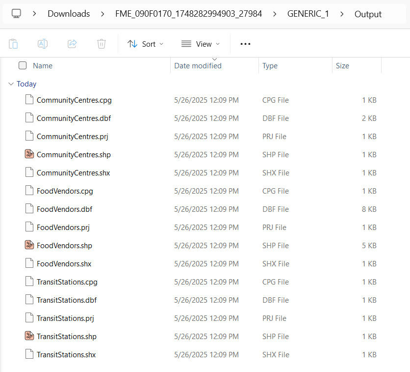
Jennifer has successfully adapted a workspace to allow user control of the community feature types and output format. This provides greater flexibility for users to access and receive data from the workspace on FME Flow.